Slack
Works where your team already is. In Slack.
Let everyone in your Slack workspace turn their requests into Linear issues — even if they don’t have a Linear account.
Templates
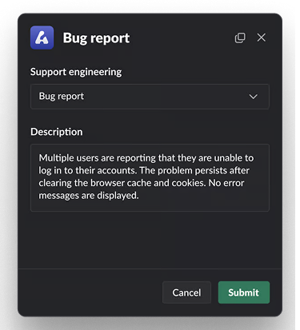
Create custom templates for different Slack channels.
Private Asks
Create private Asks via DM for sensitive requests.
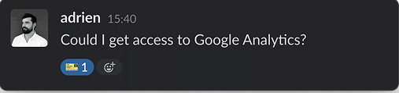
Automation Triggers
Turn any message into an Ask simply by using an emoji.
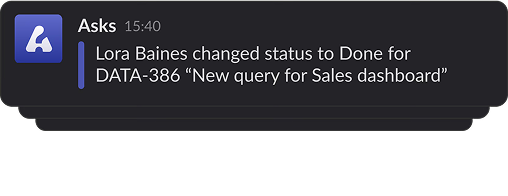
Instant Updates
Get notified about comments and status updates directly in Slack.
Linear
Respond to requests faster than ever before.
Review, prioritize, assign, and update each issue without ever switching back to Slack.
Triage
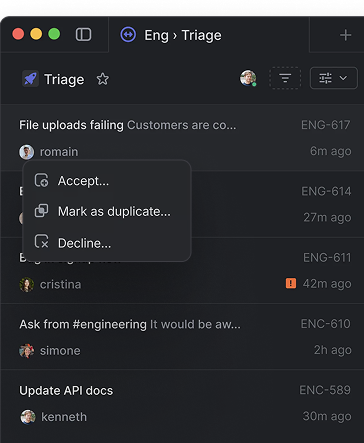
Manage incoming requests from a shared team inbox.
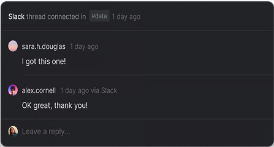
Realtime thread sync
Reply to Asks directly from Linear.
Built for speed
Fly through your requests with rapid-fire keyboard commands
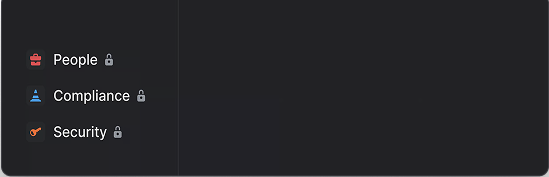
Private teams
Control who has access to sensitive requests.
“With Linear Asks we can centralize all internal request workflows across hundreds of employees including legal, IT, and customer support.”
Workflows
Create powerful pro workflows.
Advanced features like SLAs, Triage, and Linear Insights unlock new levels of control over your request workflows.
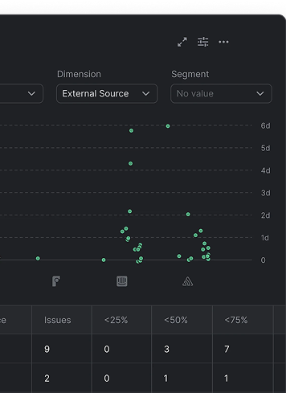
Insights Upgraded
See trends around response time, workload, and other reports.
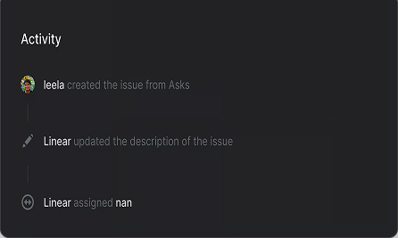
Triage responsibility New
Automatically assign or notify team members.
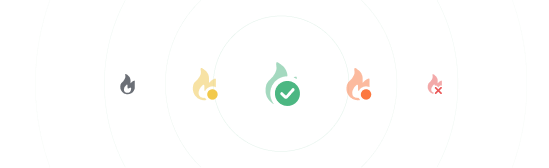
Automatic deadlines
Apply SLAs to time-sensitive Asks to communicate urgency.
How teams use Linear Asks
Linear Asks supports all types of workplace requests. From engineering and design to IT, legal, and HR.
Streamline bug reporting
Enable people outside of engineering...
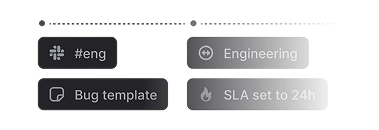
Build an IT help desk
Turn any message in your #ask-IT...
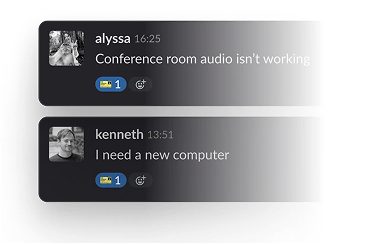
Centralize data request intake
Manage requests and questions...
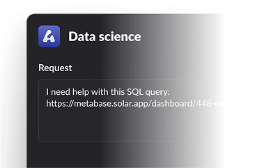
Standardize Ops requests
Configure templates with concrete...
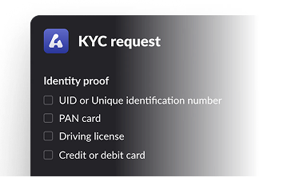
Improve customer success
Add Linear Asks to shared Slack...
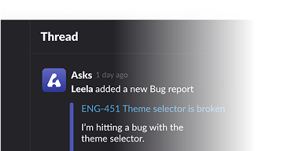
Manage sensitive HR tickets
Create private Asks via DM...

Activate Linear Asks for your team
Linear Asks is available for Plus plan workspaces. Get a 30 day free trial to see if Asks is right for you.New Plus subscribers only.